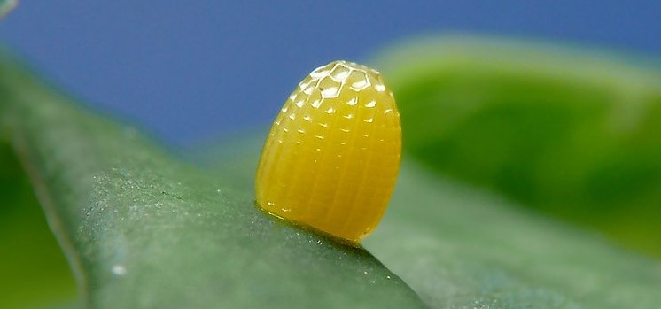
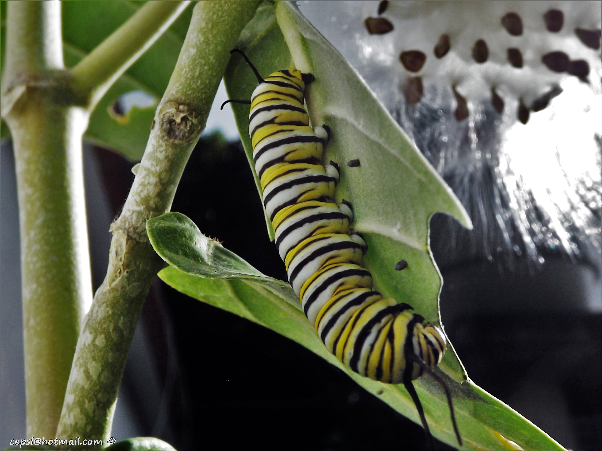
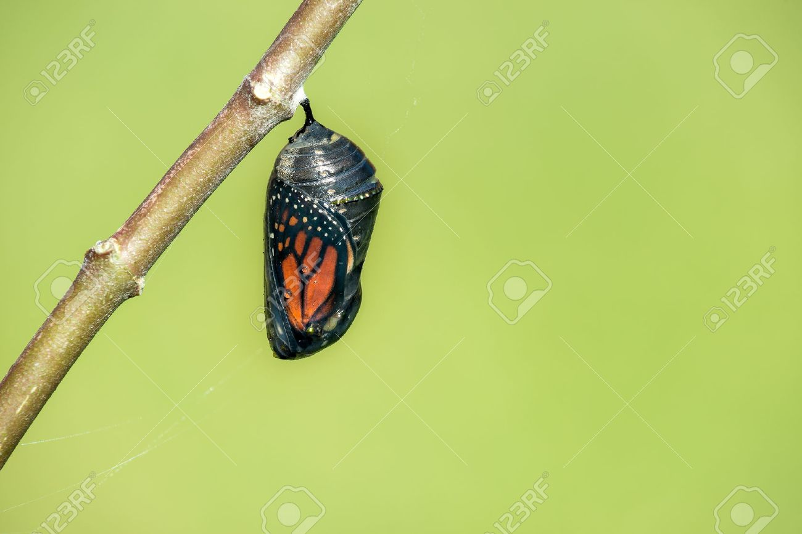

Las mariposas pertenecen al grupo de los insectos, más concretamente a los lepidópteros, y la ciencia que las estudia es la entomología, rama dentro de la zoología.
La metamorfosis de las mariposas es, probablemente, de las más conocidas y estudiadas por el ser humano, y en total comprende las siguientes etapas:
El Huevo:
La etapa inicial en la vida de una mariposa ocurre cuando un huevo es depositado en el medio ambiente y luego fecundado. Madura, a medida que la vida en su interior llega al punto necesario, y finalmente eclosiona, liberando a una larva, que comúnmente conocemos como oruga.

La Oruga:
Las larvas de mariposa, llamadas orugas, son animales alargados como un gusano, dotados de numerosas patas y una cabeza esférica, robusta, con poderosas mandíbulas. Se alimentan hasta acumular el tamaño y la energía para emprender el proceso de metamorfosis. Buscan el lugar adecuado y tejen un capullo de sedas u otras fibras que ellas mismas producen. Allí se encierran para convertirse en adultas.

La Crisálida:
Una vez dentro del capullo tejido, las orugas pasan a ser crisálidas o pupas, y llevan una vida inmóvil que dura alrededor de tres semanas. Durante ese tiempo, los tejidos de la oruga se modifican, disuelven y construyen, hasta adoptar la forma de un adulto completo (imago). La crisálida se va también endureciendo, hasta que, llegado el momento, se resquebraja, para dejar salir a una mariposa adulta.

La Mariposa Adulta:
Luego de romper la crisálida, la mariposa despliega sus alas recién nacidas y las deja secar y llenarse de hemolinfa. Mientras tanto, emerge por completo y, todavía colgando en su lugar, se prepara para el vuelo, listo para llevar una vida aérea, alimentándose del néctar de las flores y otros fluidos similares, y así reproducirse ,volviendo a empezar el ciclo.